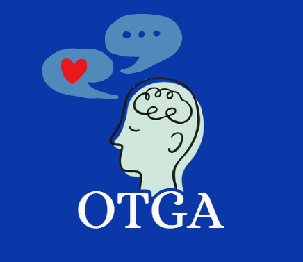

Helping Occupational Therapists COAST Through the Day.
Fundamental self-care tasks required for daily independent living (dressing, eating, bathing, functional mobility).
American Occupational Therapy Association; the primary national professional association representing occupational therapy clinicians.
Bruininks-Oseretsky Test of Motor Proficiency (3rd ed.); standardized clinical assessment battery measuring fine and gross motor skills.
Clinical goal documentation framework: Client, Occupation, Assist Level, Specific Conditions, and Time Frame.
Certified Occupational Therapy Assistant; works under a registered occupational therapist's supervision to deliver clinical interventions.
Electronic Health Record software platform utilized by clinical facilities to store patient charts and billing encounters.
Manual Muscle Testing; standardized 0-to-5 clinical scale used by therapists to grade patient muscular strength.
Occupational Therapist, Registered; licensed clinician qualified to conduct diagnostic evaluations and sign care plans.
Peabody Developmental Motor Scales (2nd ed.); standardized assessment measuring early childhood gross and fine motor abilities.
Formal clinical treatment roadmap detailing patient diagnoses, frequency, duration, and measurable functional goals.